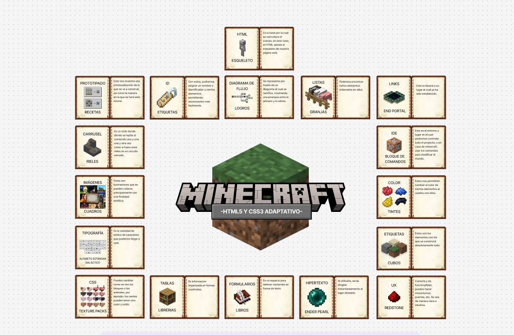

INFOGRAFIA

DOM
El DOM podría representarse como el plano de la casa, donde cada habitación, puerta, ventana, etc., es un objeto en el diagrama.
Podemos usar el plano (DOM) para encontrar una habitación específica (un elemento) y cambiar su color (modificar su estilo)
o añadir un mueble nuevo (insertar un elemento).
O puede ser como cuando tienes una libreta con contactos. Tú puedes abrirla, buscar a tu amigo y cambiar su número de teléfono.
En el DOM haces lo mismo: buscas un elemento y le cambias algo (texto, color, tamaño).
DOM CSS
Podemos representarlo como todo lo que cuente como cosmético.
Ejemplo cotidiano: maquillaje, ropa y accesorios.
Ya que, estas cambian la forma en la que se ve el cuerpo sin realmente afectar la estructura principal.
Modifica cómo nos vemos en tema de colores, tamaños y estética.
DOM EVENTOS
Los eventos DOM son acciones que indican que algo ha sucedido en el DOM:
- Alguien toca un botón.
- Alguien escribe algo.
- Alguien mueve el mouse.
Ejemplo cotidiano:
Cuando entras a una tienda y la puerta automática se abre sola porque detectó tu movimiento.
El evento fue “te acercaste” y la reacción fue “abrir la puerta”.
DOM ANIMACIONES
Las animaciones son como hacer que los objetos se muevan o cambien poco a poco.
Pueden girar, moverse, agrandarse, desaparecer, cambiar su opacidad, color, etc.
Ejemplo:
Un semáforo no cambia de golpe, sino que ves cómo pasa de verde, amarillo y rojo poco a poco. Eso es una animación.